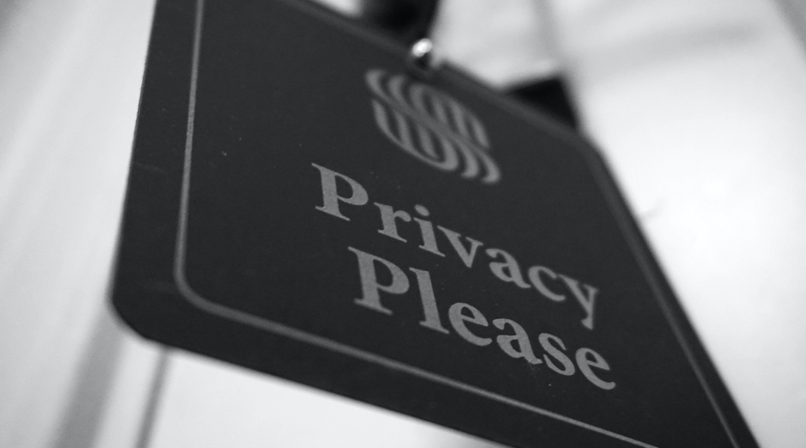

How To Keep A Low Profile
Find the best tips to avoid being tracked

Cindy Gonzalez
Nov 18 2020
Find the best tips to avoid being tracked
Nov 18 2020
Maybe you have heard that there are browsers out there like firefox 72 which has a browser fingerprinting protection implemented in its system. If you use a browser like this one, you will be given the option to have cookies automatically deleted after each session, which is a good option to avoid tracking. If you don't like firefox 72, you can also manually clean your internet browsing history after every use. Another thing you can do is read carefully. Sometimes we are asked to give more information than needed by apps permission requests. A way to do this is to consider whether it's worth it for you to give so much information when you are visiting a website. How? by evaluating your purpose in the website. If you are only reading an article it might not be necessary to give out your mailing address. Remember that some people are just trying to collect as much information from you as they can.
Detour browsers are also commonly used to avoid tracking. You can also use plugins to block javascript, but keep in mind that this often makes your navigating experience a lot more complicated since all websites use javascript nowadays, so this option might not be worth it. You can also make sure to keep your antivirus up to date in case you run into a malicious website. Make sure you scan files with your antivirus software before downloading. Another thing you should avoid is using the password for multiple websites. Sometimes these are hacked and your information can be used instantly in a variety of platforms. You can also turn on your browser's pop up blocker.
To avoid IP tracking you can use a Virtual Private Network (VPN) tool when working on your personal computer. Some people choose to use IP Vanish, where you log into the VPN as an intermediary.
You can also double check that you are using HTTPS or Secure Sockets Layer (SSL) if you are providing personal information, making purchases online, or you want to verify that you are in a secure and trustable website. This is found as “https://” in your browser's URL bar.
You might have already inferred that avoiding tracking is practically impossible, but the options above might help you to secure that less of your personal information gets tracked. What can really prevent you from being tracked is to keep a low profile:
Don’t be so unique! We know this is not what you often hear, but it is better to blend in when browsing through the internet. For example, use browsers that most people use, like Google Chrome or Microsoft Edge instead of a super unique browser, because that will only make it easier for you to be identified. Also, try to avoid crazy plugins, these are also easy to be tracked, and therefore easier for anyone to make your browser fingerprint more identifiable. When you keep a low profile you become less predictable and less identifiable! Which prevents you and your computer from being targeted.
And one final tip: Remember to spread the word out, awareness is a powerful tool and the more people who grow concerned about privacy, the easier it would be for us to fight for it.
CONTACT US
We will be pleased to bring you more information about topics that interest you.
CINDY GONZALEZ
cmg23@njit.edu

IDO TANNE
it49@njit.edu